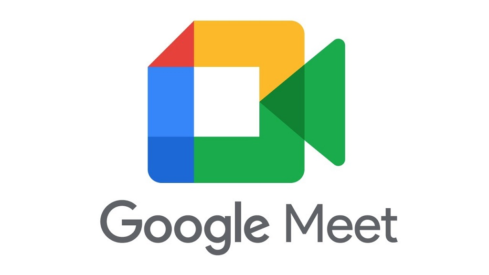

Ventajas del E-Work
Mayor conciliación entre la vida laboral y personal
El E-work permite adaptar los horarios laborales a las necesidades personales y familiares, lo que facilita el equilibrio entre el trabajo y el tiempo libre. Esto mejora la calidad de vida y reduce el estrés.
Acceso a oportunidades laborales internacionales
El trabajo remoto elimina las barreras geográficas, permitiendo a los profesionales postularse a empleos o colaborar con empresas en cualquier parte del mundo. Esto amplía las oportunidades y fomenta la diversidad en los equipos.
Ahorro en tiempo y costos de desplazamiento
Al no tener que trasladarse a una oficina, los trabajadores ahorran tiempo valioso y dinero en transporte, combustible o alimentación fuera de casa. Este ahorro también se traduce en mayor productividad y bienestar.
Reducción del impacto ambiental
La disminución del uso de vehículos y transporte público reduce significativamente las emisiones de gases contaminantes, contribuyendo a un modelo de trabajo más sostenible y respetuoso con el medio ambiente.
Desafíos del E-Work
Dificultad para separar la vida laboral y personal
Al trabajar desde casa, los límites entre lo personal y lo profesional pueden difuminarse. Esto puede generar agotamiento, estrés o sensación de estar "siempre conectado".
Problemas de seguridad digital y privacidad
El uso de redes domésticas y dispositivos personales puede aumentar los riesgos de ciberataques, pérdida de datos o filtración de información confidencial, lo que exige medidas de ciberseguridad más estrictas.
Falta de interacción social y trabajo en equipo
La ausencia de contacto presencial puede afectar la colaboración, la comunicación y el sentido de pertenencia al equipo. También puede generar sentimientos de aislamiento en algunos trabajadores.
Necesidad de autogestión y disciplina
El E-work requiere que el trabajador sea responsable, organizado y proactivo. No todos tienen la misma facilidad para mantener la concentración o cumplir objetivos sin supervisión directa.

El E-work: nuevas formas de trabajo
4. Ventajas y desafíos del E-work
Obra publicada con Licencia Creative Commons Reconocimiento Compartir igual 4.0